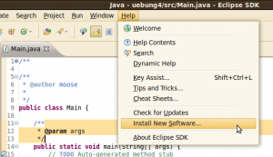
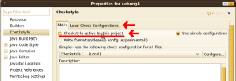
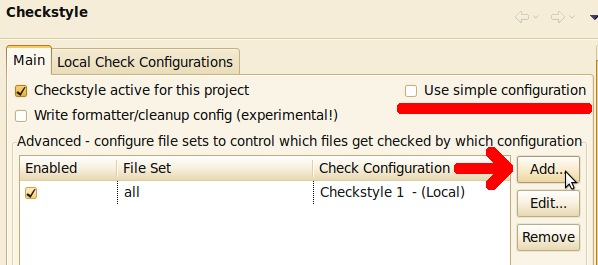

I have to go to a programming course at KIT at the moment where we are taught how to program with Java. They create exercises which get evaluated automatically. One part of the evaluation is checkstyle.
So it is a good idea to test the files on my machine before uploading them.
Installation
You can install it on an Ubuntu system with this command:
sudo apt-get install checkstyle
Usage
You can call checkstyle with this command:
checkstyle -c /usr/share/checkstyle/sun_checks.xml YourCode.java
Another example would be:
checkstyle -c /path/to/config/Progr_WS11_Checkstyle1.xml KITBook.java
It will generate some output similar to this:
Starting audit...
KITBook.java:173:64: '{' is not preceded with whitespace.
KITBook.java:174:69: '-' is not preceded with whitespace.
KITBook.java:174:70: '-' is not followed by whitespace.
Audit done.
Resolve warnings
[warning] /usr/bin/checkstyle: No java runtime was found
[warning] /usr/bin/checkstyle: No JAVA_CMD set for run_java, falling back to JAVA_CMD = java
You have to set the path:
JAVA_CMD=/usr/lib/jvm/java-6-sun/bin/java
export JAVA_CMD
Check all files in a folder
checkstyle -c /home/moose/Downloads/Progr_WS11_Checkstyle1.xml -r .
Checkstyle and eclipse
Go to Help → Install New Software ...
{kind=link}

Install http://eclipse-cs.sf.net/update/ as a new "repository".
After you have installed the plugin, you have to activate it for your project. To do so, you have to go to Project → Properties and check Checkstyle active for this project. Then you have to change to the Local Check Configurations tab and load your personal checkstyle xml files.
{kind=link}

Click on New, give it a name and click on import. Go back to the main tab and use your personal checkstyle. You will have to rebuild the project.
You might want to use more than one checkstyle file. You can do that if you uncheck Use simple configuration:
{kind=link}

Now you can set File Set Configuration to All, select your Check Configuration, click on OK and enable it in the Main tab.
Further reading and resources
KIT
If you are a student at KIT and you can download the KIT checkstyle-files from zvi.ipd.kit.edu. If you can't do it from home via VPN, you could use SSH.
These commands work fine on Ubuntu and I guess on every Linux machine. If you use Windows, you will have to install Putty or something similar.
Login with your personal account that begins with u. I'll use uabcd in this example.
ssh uabcd@rzstud.stud.uni-karlsruhe.de
Then download the files with wget:
wget ftp://ftp.ira.uka.de/pub/ZVI/KIT/programmieren_ws11/material/Progr_WS11_Checkstyle1.xml
wget ftp://ftp.ira.uka.de/pub/ZVI/KIT/programmieren_ws11/material/Progr_WS11_Checkstyle2.xml
Now you can exit the bash with exit and download the files from your account with scp:
scp uabcd@rzstud.stud.uni-karlsruhe.de:~/Progr_WS11_Checkstyle1.xml ~/Progr_WS11_Checkstyle1.xml
scp uabcd@rzstud.stud.uni-karlsruhe.de:~/Progr_WS11_Checkstyle1.xml ~/Progr_WS11_Checkstyle1.xml